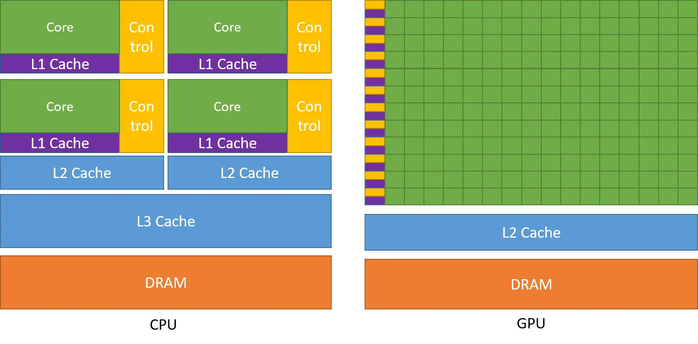
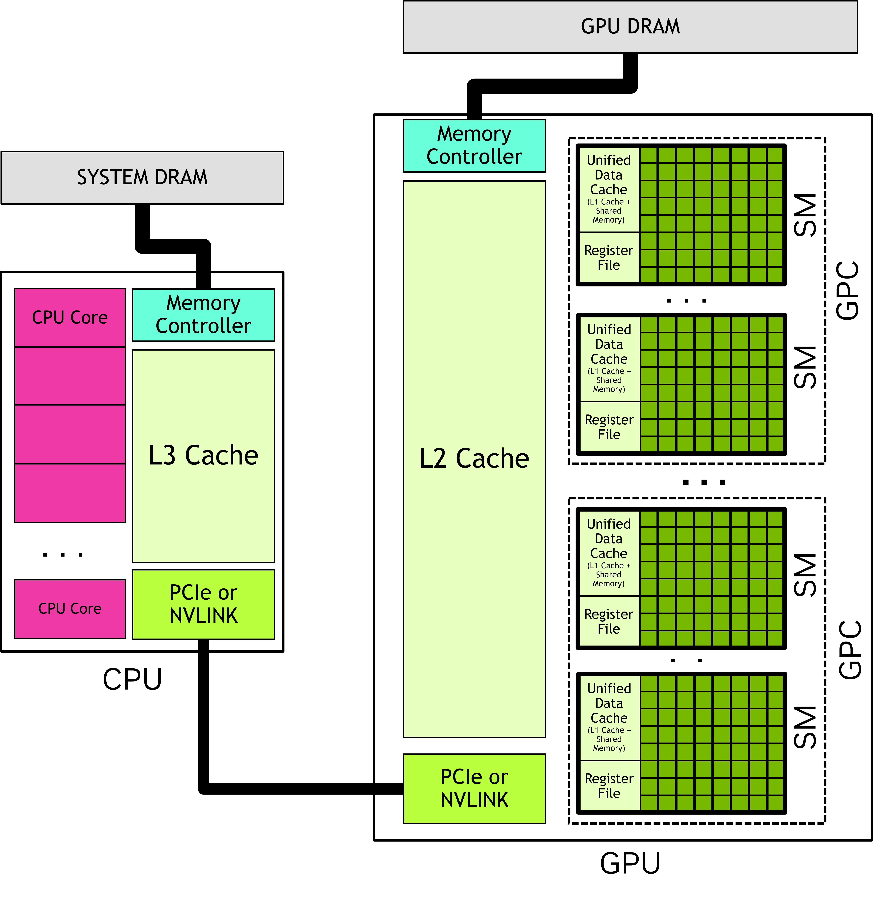
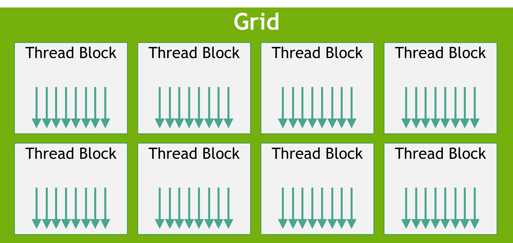
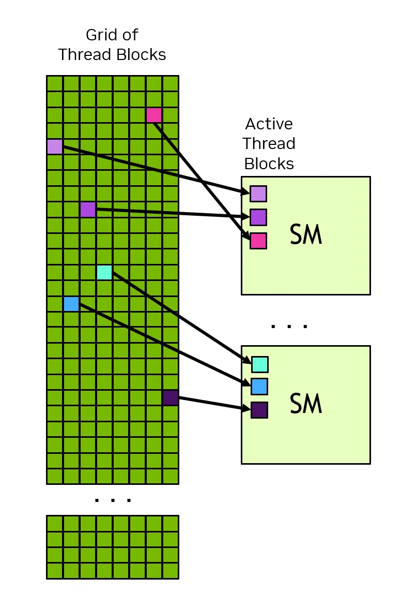
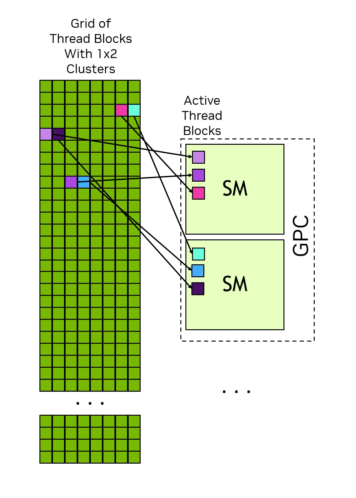

# 前言
本篇是介绍 CUDA C++ 的第一篇。资料来源于 官网 CUDA Programming Guide。本文会比官网教程简洁一些，去掉一些我不太感兴趣的内容（任性）。
作为初学者，错误在所难免，还望不吝赐教。
# GPU 和 CPU 对比
在相同的价格和功耗范围内，GPU 的指令处理量和内存带宽都远高于 CPU。许多应用程序利用这些特性，在 GPU 上运行的速度要比在 CPU 上快得多（详见 “GPU 应用” 部分）。其他计算设备，如 FPGA，同样具有很高的能效，但相比 GPU，其编程灵活性要低得多。
图形处理器（GPU）和中央处理器（CPU）的设计目标各不相同。CPU 的设计初衷是尽可能快速地执行一系列连续的操作（称为 “线程”），并且能够并行执行几十个这样的线程；而 GPU 则旨在并行执行数千个线程，以牺牲单线程性能为代价来实现更高的总吞吐量。
图形处理器（GPU）专用于高度并行的计算，并在数据处理单元上投入更多晶体管，而中央处理器（CPU）则在数据缓存和流程控制方面投入更多晶体管。下图 展示了 CPU 与 GPU 在芯片资源分配方面的示例情况。

利用 GPU 提供的计算能力有多种方法。本指南介绍了使用 C++ 等高级语言在 CUDA GPU 平台上进行编程的方法。然而，在不需要直接编写 GPU 代码的应用程序中，也有许多利用 GPU 的方式。
通过专门的库，可以获取来自不同领域的不断增多的算法和程序集。当某个库已经实现（尤其是由 NVIDIA 提供的那些）时，使用该库通常比从头开始重新实现算法更具效率和性能。像 cuBLAS、cuFFT、cuDNN 和 CUTLASS 这样的库只是帮助开发人员避免重新实现成熟算法的几个例子。这些库还有一个额外的好处，即针对每种 GPU 架构进行了优化，从而提供了高效性、性能和可移植性的理想组合。
此外，还有一些框架（尤其是那些用于人工智能的框架）提供了基于 GPU 加速的构建模块。这些框架的加速功能是通过利用上述提到的 GPU 加速库来实现的。
此外，诸如 NVIDIA 的 Warp 或 OpenAI 的 Triton 这类特定领域的语言（DSL）能够编译并直接在 CUDA 平台上运行。这为对 GPU 进行编程提供了一种比本指南中所涵盖的高级语言更高层次的方法。
# 异构系统
CUDA 编程模型假定存在一种异构计算系统，即包含图形处理器（GPU）和中央处理器（CPU）的系统。与 CPU 直接相连的内存被称为主机和主机内存。与 GPU 直接相连的内存则被称为设备和设备内存。在某些片上系统（SoC）中，这些可能共用一个封装。在更大的系统中，可能会有多个 CPU 或 GPU。
CUDA 应用程序会在 GPU 上执行其部分代码，但应用程序总是从 CPU 开始执行。主机代码（即在 CPU 上运行的代码）可以使用 CUDA API 在主机内存和设备内存之间复制数据、启动在 GPU 上执行的代码，并等待数据复制或 GPU 代码完成。CPU 和 GPU 可以同时执行代码，并且通常通过最大限度地利用 CPU 和 GPU 的利用率来获得最佳性能。
应用程序在 GPU 上执行的代码被称为设备代码，而用于在 GPU 上执行的函数则由于历史原因被称为内核。启动一个内核运行的过程被称为启动内核。内核启动可以理解为在 GPU 上同时启动许多执行内核代码的线程。内核启动类似于 CPU 上的线程，不过在正确性和性能方面存在一些重要差异。
# GPU 硬件模型
与任何编程模型一样，CUDA 也依赖于对底层硬件的某种概念性模型。对于 CUDA 编程而言，GPU 可以被视为一组流式多处理器 Streaming Multiprocessors（SM），这些 SM 以称为图形处理集群 Graphics Processing Clusters（GPC）的组形式组织在一起。每个 SM 都包含一个本地寄存器文件 local register file、一个统一的数据缓存 unified data cache，以及执行计算的若干功能单元。统一的数据缓存为共享内存和 L1 缓存提供了物理资源。统一数据缓存的分配到 L1 和共享内存可以在运行时进行配置。不同类型的内存的大小以及每个 SM 内部的功能单元的数量在不同的 GPU 架构中可能会有所不同。

上图是 CPU 和 GPU 的硬件架构对比图，可以看到总体结构类似。CPU 有主机内存 System DRAM，个人电脑常见的运行内存 8G、 16G、 32G。GPU 有他的显存 GPU DRAM，常见的 8G、12G 等，与主机内存处于同一水平，但是 GPU 显存带宽更高，速度更快。CPU 有三个缓存层级，L1 → L2 → L3，逐级变大变慢。而 GPU 为两层，L1 + 共享内存 → L2，没有 L3。CPU 有少量的核心数量，少（比如 4～16 个核心）。而 GPU 有大量的核心，成百上千个，这些核心被组织成 warp、block、cluster、grid、SM、GPC 等，后续会介绍到。
# Thread Blocks 和 Grids
当一个应用程序启动内核时，它会使用大量线程，通常多达数百万个线程。这些线程被组织成不同的 block——Thread Block。Thread Block 被组织成一个 grid。grid 中的所有 Thread Block 都具有相同的大小和尺寸。

通过使用内置变量，每个执行内核的线程都能够确定其所在所在的包含 Block 的位置，以及其所在的包含 Grid 中的位置。线程还可以利用这些内置变量来确定 Thread Block 的尺寸以及内核被启动时所在的 grid 的尺寸。这使得每个线程在运行内核的所有线程中都具有独特的身份。这种身份通常用于确定某个线程负责处理哪些数据或执行哪些操作。
一个 Thread Block 中的所有线程都在一个单一的 SM 中执行。这使得 Thread Block 内的线程能够高效地进行通信和同步。Thread Block 内的所有线程都能访问片上共享内存，该内存可用于 Thread Block 内各线程之间的信息交换。
一个 grid 可能由数百万个 Thread Block 组成，而执行该 Grid 的 GPU 只可能拥有几十或几百个 SM（流处理器）。一个 Thread Block 中的所有线程都由一个单独的 SM 执行，并且在大多数情况下，这些线程会在该 SM 上完成运行。Thread Block 之间没有调度保证，因此一个 Thread Block 不能依赖其他 Thread Block 的结果，因为这些结果可能要等到该 Thread Block 完成之后才能被调度。下图展示了 grid 中的 Thread Block 如何被分配到一个 SM 上的示例。

每个 SM 中都有一个或多个活跃的 Thread Block。在本示例中，每个 SM 同时调度了三个 Thread Block。对于 Grid 中的 Thread Block 分配到 SM 的顺序，并没有任何保证。
除了线程块之外，具有 compute capability 9.0 及更高版本的 GPU 还有一种可选的分组方式，称为 “Cluster”。Cluster 是由一组 Thread Block 组成的，与 Thread Block 和 Grid 一样，可以以 1 维、2 维或 3 维的形式排列。图 5 展示了一个网格化的 Thread Block，它被组织成了 Cluster。指定 Cluster 并不会改变 Grid 的尺寸或 Grid 内 Thread Block 的索引。

将相邻的 Thread Block 划分成 clusters ，并在 clusters 级别提供了更多的同步和通信机会。具体而言，一个 clusters 中的所有线程块都在单个 GPC 中执行。图 6 展示了在指定 clusters 时，Thread Block 如何在 GPC 中被分配到 SM 上。由于 Thread Block 是同时在单个 GPC 中进行调度的，因此同一 cluster 内的不同 Thread Block 中的线程可以使用由协作组提供的软件接口进行通信和同步。Cluster 中的线程可以访问 Cluster 中所有 Thread Block 的共享内存，这被称为分布式共享内存。Cluster 的最大大小取决于硬件，并且在不同的设备中有所不同。

# Warps 和 SIMT
在一个线程块内，线程被组织成由 32 个线程组成的组，这些组被称为 “warps”。一个 warp 按照 “单指令多线程”（SIMT）模式执行内核代码。在 SIMT 模式中，warp 中的所有线程都在执行相同的内核代码，但每个线程可能会根据不同的分支路径来执行代码。也就是说，尽管程序的所有线程都执行相同的代码，但这些线程并不需要遵循相同的执行路径。
当线程由一个 warp 执行时，它们会被分配一个线程组通道 warp lane。warp lane 的编号范围为 0 到 31，而来自一个线程块的线程会按照硬件多线程中所详述的可预测方式分配到 warp 中。
在 warp 中的所有线程会同时执行相同的指令。如果一个 warp 中的某些线程在执行过程中遵循了控制流分支，而其他线程没有这样做，那么不遵循分支的线程将会被屏蔽掉，而遵循分支的线程则会被执行。例如，如果一个条件仅在 warp 中的半数线程中为真，那么另一半织线中的线程将会被屏蔽掉，而活跃的线程则会执行那些指令。这种情况如下图所示。当一个 warp 中的不同线程遵循不同的代码路径时，这有时被称为 warp 分歧。因此，当 warp 中的线程遵循相同的控制流路径时，GPU 的利用率会达到最大化。
在 SIMT 模型中，同一线程 warp 中的所有线程会同步地在内核中执行。硬件执行方式可能有所不同。有关此区别在何处重要的更多信息，请参阅 “独立线程执行” 部分。利用了解线程 warp 实际映射到实际硬件的方式的知识是不被提倡的。CUDA 编程模型和 SIMT 表示，同一线程 warp 中的所有线程会一起执行代码。只要遵循编程模型，硬件就可以以对程序不可见的方式优化掩码通道。如果程序违反了这个模型，这可能会导致未定义的行为，且这种行为在不同的 GPU 硬件上可能有所不同。
虽然在编写 CUDA 代码时无需考虑线程组（warp）的问题，但了解线程组的执行模型有助于理解诸如全局内存协同和共享内存 bank 访问模式等概念。一些高级编程技术会利用线程块内线程 warp 的特化来限制线程的分歧并最大限度地提高利用率。这些以及其他优化措施都利用了在执行时线程会被分组为线程 warp 这一事实。
线程执行的一个影响是，线程块的最佳设定应使其总线程数为 32 的倍数。可以使用任意数量的线程，但当总数不是 32 的倍数时，线程块的最后一组线程在执行过程中会有部分线程处于未使用状态。这很可能会导致该线程 warp 的功能单元利用率和内存访问效率降低。
# 后记
本博客目前以及可预期的将来都不会支持评论功能。各位大侠如若有指教和问题，可以在我的 github 项目 或随便一个项目下提出 issue，并指明哪一篇博客，看到一定及时回复！